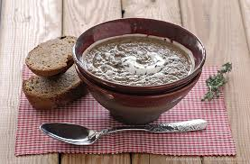

Garlic Cream Soup

In Germany and Austria it is called knoblauchsuppe for a reason
Let's see how to make this easy recipie!
Ingridients:
- 1 and a half liters of Chicken Stock
- 2 cloves of Garlic
- 3 tbs of Sunflower Oil
- 2 tbs of Flour
- 200 ml of Heavy Cream
- 1 loaf of Sourdough Bread
Steps:
- Mince the garlic
- In another pan boil the chicken stock
- In a pan heat the oil and sate the graclic for 3 minutes(Be cautious, don't burn the garlic!)
- Add the sateed garclic to the boiling stock and boil for another 10 minutes
- Mix the flour with the heavy cream and add it to the stock and let it simmer for another 10 minutes
- Blend it with an immersion blender
- Cut the to off the bread and scoop out the inside to make a bowl
- BON APETITE!
Home